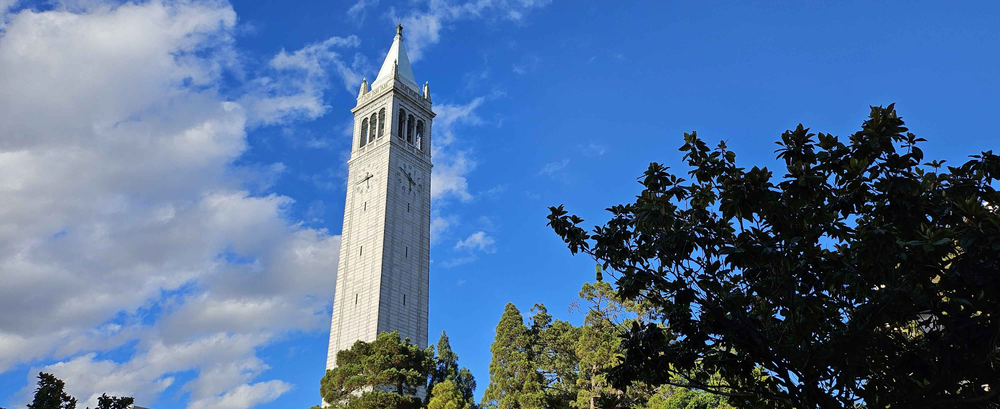
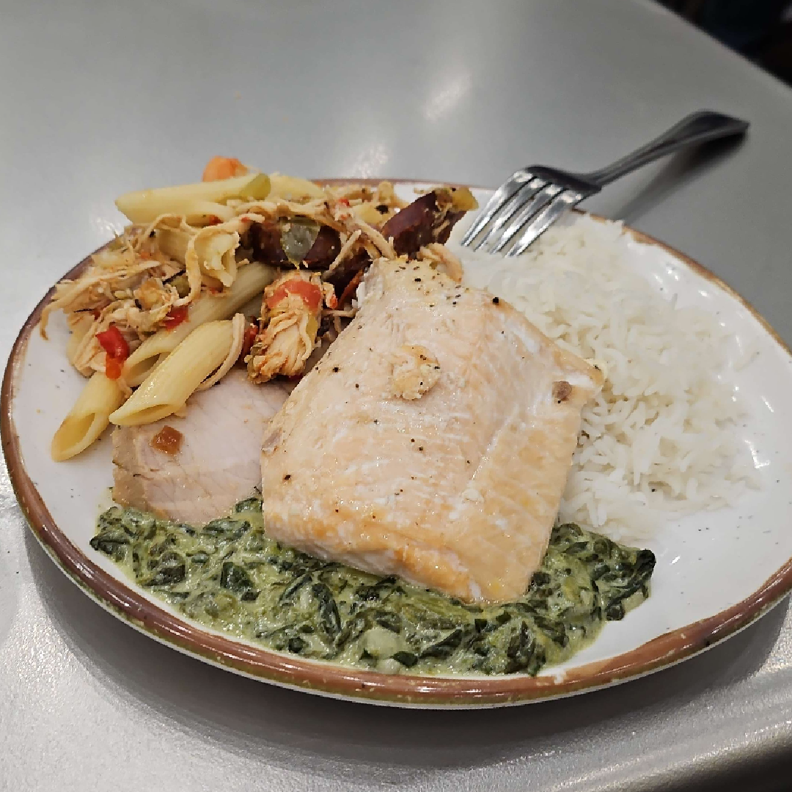
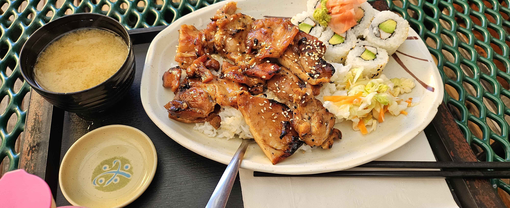
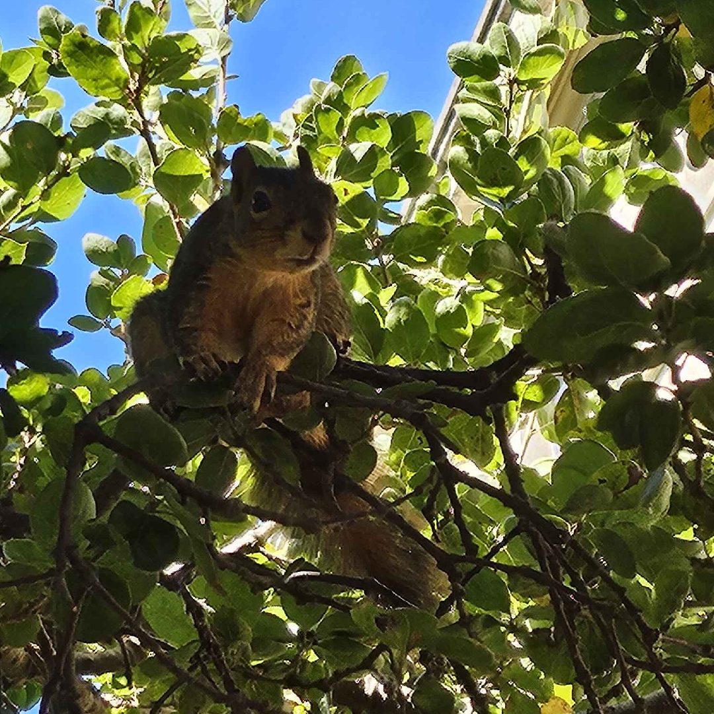

About This Page
This is the home of my random thoughts and things I think are interesting or want to chronicle for my own memories.There is also an individual page for my Gunpla
Search
1/30/25 | First Semester
I figured I should write something to this extent since I wrote something for the first month at Berkeley, though to be honest, I don't think I have much to say. My initial impressions haven't been really shifted and I'm fairly content with where I ended the semester. I'll look back on this post and find myself very boring, but I think I would understand. I was fairly academically successful, I didn't socialize as much as I could've (don't know if I wanted to though), and I found myself a decent spot in professional oriented club.I'll probably do another set of posts in my senior year and hopefully I'll have something more interesting (and introspective) to write about.
10/19/24 | Music
My friend recently convinced me to waste about $200 on Sennheiser HD560s headphones by relentlessly talking about how incredible the experience is. In his words, "it's like seeing colors," "you won't be able to listen to music any other way," and "it's almost exactly like listening to live music." The last thing I needed was another money sink hobby in my life but I eventually caved after a few weeks, and while I will say he was overexaggerating, I don't think I can say by much. I don't regret buying these headphones whatsoever. There's a depth to most music that I think I haven't really heard in headphones before. I would imagine it's like the difference between a digital piano and a physical piano; there's just some nuance to the sound that's lost.9/29/24 | First Month
I guess it's more like first month and a week but does it really matter?I thought I should write some thoughts about my first month at UC Berkeley so here they are.
Classes have been for the most part reasonable, I performed fairly alright on my very first set of midterms and I am feeling pretty good for the rest of the semester. The content isn't too crazy but I definitely need to put in the work. The professors are normal for the most part but somewhat eccentric at times (Babak Ayazifar), but they're all ultimately pretty inspiring to listen to (Peter Hurtubise from the sociology deptarment).
Campus itself is really beautiful, I took a lot of pictures early in the semester I'll probably upload them sometime later in the year along with some others. For now have a picture I took of the campanile.

The city of Berkeley itself is generally lively and enjoyable. The buildings are pretty and the streets are mostly clean, it's pretty fun to just walk around town.
The food served in the dining halls ranges from disgusting to just alright, I don't understand how one of the best universities in the world can serve such bad food. Below is some dry and old tasting salmon with some other bland foods on the side. I feel as if I literally just eat nutrient cardboard every day.

However, the food outside of the dining halls is really good. Below is some chicken teriyaki from Aki's Japanese which was pretty good and a great amount of food for the price (especially in Berkeley).

The homeless people are something of a problem but so far they've mainly been annoyances more than anything hopefully that never escalates (got called a yellow-skinned bitch once). Although I do really like the crazies who just do nothing but yell about the shadow government coming to get you. I think they're neat.
The people at Berkeley can be really nice and can be very tedious to talk to. What I mean is the people in EECS have for the most part been very difficult to talk to, it's always consulting clubs, projects, and internships with them; can't they talk about anything other than being successful? There are few exceptions to this rule it feels like, I think I'll have a good chance at finding these exceptions in smaller coding clubs but I'll have to see. On the other hand, outside of EECS the people are generally very nice and I hope to make some more friends soon. On a side note, the few friends I made in orientation have mostly fallen away which saddens me but I guess that's sort of to be expected for people outside of your major.
I would say these are all the thoughts that have really come to mind when thinking back on my first month, maybe I'll make another entry like this at the end of the semester, I'm sure it'll be fun for me to read this entry in a few months.

7/3/24 | Japan
Recently I traveled to Japan for about a week. Like many other people my age, Japan's cultural exports left me with a great desire to one day visit the country (in all honesty not sure if I'm using that term right but it makes sense as a way to describe it in my head). Overall, the trip was great with the only complaints coming from my legs after essentially speedrunning most major tourist spots in Japan.Day zero (the day I landed so not really a day) was very relaxed with a few main objectives: get out of the airport, get to the hotel, eat something, sleep, this is effectively what happened. However, that does not mean I have nothing to say about day zero. My first impressions of the country started the second I got into a taxi, in the backseat behind the passengers side (which is on the left instead of the right), there was a screen with advertisements playing. This interested me as, in my opinion, one very easy way to determine the current cultural priorities of a country is to observe what things and how things are advertised. Nearly every ad was in a corporate setting and displayed some underlying meaning of "this will increase productivity." There were the essential corporate solutions ads but even things like ads for taxi services or stomach ache medicine were in the context of, "being the smarter more efficient worker for using the taxi app" or "you can work so much better if you feel better." I cannot read or speak Japanese with any fluency but even this was immediately clear to me; from my snapshot in Japan, the idea of an intense work culture is very real. Beyond this there was the city itself, the city is huge, it felt endless. In cities like San Francisco or New York I felt as if it was conceivable to leave the city on foot, but in Tokyo it was as if I could walk for that entire week and still be surrounded by nothing but skyscrapers. Additionally, it never felt as if I had ever "moved districts." What I mean is that the city felt so consistent, while you could tell if you were in a richer area, it was as if there was an unbreakable floor for the base quality for any part of the city. I am sure that anyone who has actually lived in the city could tell you exactly how wrong that statement is in reality but as a tourist it was like I only knew I had moved a great distance in the city because I was in a moving car for 30 minutes. First impressions aside the day progressed beyond my taxi ride, into dinner which was a 7-11 "egg sando" (a sandwich), and into the first real day.
Day one was a day spent in Shibuya. Due to jet-lag I and the person I was traveling with awoke early in the morning. We decided to spend the morning walking around aimlessly getting to know the area we were in (although she never actually learned). We ended up walking all the way to Tokyo Tower and discovering all of our local metro stations.
As we explored our local station we discovered that Suica cards (the local metro pass) was no longer being sold at minor stations. Everyone else with me on that trip was an iPhone user so they had no problem using Apple Pay to use the transit system, I thought this was nothing more than a minor setback as I would just buy a physical one at a station however, this derailed that plan. We returned to the hotel where I did research and discovered they could possibly be purchased at the major stations such as Shibuya, Tokyo, and Haneda International Airport (god damn it). For our trip to Shibuya I used the ticket system which while not convenient felt so efficient for some reason (if mobile pay and IC cards didn't exist I don't think I would've minded at all using the ticket system). Shibuya was mostly spent shopping, finding all of our favorite Japanese products from Pokemon to Uniqlo clothes. I unfortunately started what would be a habit of rolling a couple gacha machines every day (probably adding upwards of five to seven thousand yen over the course of the trip) and rolled for a few toys at the Pokemeon center, I ended up getting a windswept Yamper and a Spheal keychain (I love him).

For lunch we visited Ichiran Ramen, it was probably some of the best ramen I had eaten, I'm not a food critic so I can't really put into words what made it so special but it was better (and much cheaper) than any shop I had visited in the US. I really loved how customizable every part of the dish was on the ordering ticket.
Beyond this nothing really of note happened that day, we enjoyed our time exploring, getting lost, shopping, and eating in Shibuya but nothing else worth dedicating to writing.
Day two was spent at Tsukiji (fish market) and Akihabara (electric town). Our main goal for that day was to get a reservation at the renowned Sushi Dai restaurant in the fish market. We arrived at 7 AM which was barely on time for a reservation for four about four hours later. From my understanding we got one of the last reservations possible that day. We naively thought we were going to be able to get a reservation for around breakfast (maybe 8 or 8:30) but that ended up falling through so we ate breakfast at a neighboring restaurant. The food wasn't anything exceptional and was one of the more expensive meals we ordered during this trip (at about 5000 yen or $30 per person), we very much fell into a tourist trap (probably meant for those who failed to get a reservation at Sushi Dai). To further pass the time, we explored the surrounding market area. The building itself had many areas where you could peer into the lower market and read some random facts about the building or fish. We ultimately made our way up the building, to a small market for souvenirs, groceries, and other oddities, and then to the roof which had a small garden and walking path. It was mostly empty since it was raining so we had a great time walking around by ourselves up there. Next, we made our way down to a separate market area, we really just walked through since we didn't want to stand around due to the rain, however, we did buy candied strawberries which were really good.

This ate up just enough time for us to return to Sushi Dai and have some of the best sushi of our lives for a comparatively affordable price. The meal consisted of nine curated dishes of sushi along with one tenth dish of your choice. Additionally, a raw-fish-less option was offered for a slightly higher price which was great for one of us. It was really delicious, like a said before I am not a critic but it tasted like the sushi I know but raised up to eleven in terms of flavor. At only ~5000 yen per person (~$31) it was easily one of (if not) the best price to enjoyment meals I've had in the past year. I think I might need to go back to Japan just to eat there again.
After this our group split so I could head to Akihabara to find some Gundams and explore what is effectively nerd central. I walked from building to building and bought some anime merchandise (mostly Studio Ghibli stuff like keychains and small plush toys), and people watched. I eventually ended up in an arcade where I saw some guy going absolutely crazy on a Taiko drum game (Taiko no Tatsujin), he brought his own sticks and was being flashy at every larger opportunity between notes, absolutely inspirational. I ended my small journey by visiting several gundam stores and bought a couple kits and a pair of nippers (apparently Japanese knives and tools are really exceptional and after using them I guess they're better but it could just be that my old nippers were just really old).
Day three was a travel day, we made way to Kyoto by the bullet train (shinkansen) and resettled in a new hotel. I walked around for a bit and I took a picture of a street.
I explored around Kyoto a small amount around our hotel but ultimately took most of the day to rest. We ate some pretty good tsukemen (dipping) ramen and called it a day.
Day four we visited Osaka and Universal Studios Japan. We were mostly in Universal Japan to see a few main attractions we couldn't find in America and Super Nintendo World. We began by visiting the My Hero Academia ride since it was literally at the front of the park, it was a thing I guess. I stopped reading the manga about a year ago now and I'm not sure what I really expected but it really was a nothing burger of a ride. Next, we walked around waiting for our reservation to enter Super Nintendo World. I found a funny USPS box with a couple typos on the small box most notably the misspelling Sunday as Sunrday.
We also found San Francisco land so we ended up back in California in Japan which was funny, and walked into Despicable Me land. Japan must really love minions or something. Since the single rider line was really short for the Despicable Me ride we decided to have a shot at it. It was identical to the one in Hollywood except for the fact that you are in a car with a roof that I was very evidently too tall for and nearly got kicked off for as the ride operator very clearly was not sure what exactly to do about the situation and moved me several times before essentially just saying screw it and put me in the ride. Eventually we made our way into Super Nintendo World and it was really cool, theme parks that can really immerse you into a world are great and bar the cloudy day the designers at Universal Japan really knocked it out of the park with that section.
We rode the Mario Kart ride which was interesting but nothing I want to specifically write about, got stuck in a gift shop, took a few pictures, and left the area. Following this we rode the Hollywood dream rollercoaster which was just a rollercoaster but like any rollercoaster it was fun and thrilling, just nothing exceptional. We ultimately decided to leave after this as most other rides we either weren't interested in or had some equivalent in California. This led us to Osaka proper where we visited the quintessential tourist spots such as the Ebisubashi bridge (the place with the funny Gilco sign) and Dotonbori where we ate some good Takoyaki. Similarly to Akihabara and Shibuya we walked around, shopped, and people watched before ultimately returning to the hotel.
Day five was spent exploring a temple and making our way back to Tokyo. We walked up to the Kiyomizudera temple which was really pretty to look at and had a great view of nature and Kyoto itself.
It was really enjoyable to be in a bit more a of a serene place for once in the trip (ignoring the massive crowd of people). However, we didn't spend too much time there as we headed back to the hotel to check out and board the train back to Tokyo soon after. We checked back into the same hotel we were originally staying at and I headed back out to look around Tokyo again. At this point I was pretty good at making my way around the city and went to the Tokyo City View atop Roppongi Hills in time to watch the sun set.
Day six was the last full day in Japan we headed to the Senso-ji temple, as well as the Tokyo Skytree area. The temple itself was pretty and well maintained with small gardens and shops surrounding it. I enjoyed walking around reading various signs describing the history of the temple, the English translations were very appreciated. In addition to the sights I pulled a fortune and got a bad fortune. Hopefully it's all just superstition. There also was a monkey performing acrobatics which was entertaining but also sad as the monkey did not seem very happy to be there.
After this we left to go to the Skytree, however, we did not actually go up as there was a sizable line to enter so we decided to stay in the surrounding mall area. Inside the mall we found a Kirby Cafe as well as an exposition for the Chiba Institute of Technology. The exposition was split into two main portitions, the first had some very cool robotics projects were on display as well as a few computer vision projects which drew a much larger crowd than any of the other exhibits, the second displayed several satellite parts and models as well as a near life-size gundam model. We spent a couple hours walking around the Skytree Town area but ultimately nothing else I'd want to write down really occurred.
This trip was really quite fun and I would want to return some time in the future just to enjoy the country again in a less rushed way. This is by far the longest entry into this blog thus far. While this entry is mostly just here to act as a reminder to myself of this very enjoyable trip.
5/16/24 | Cramming
I'm here at 1 AM at the tail end of my work and I am writing this entry to distract myself (totally didn't forget to add this portion to the entry and pushed to the repo early, oops).4/29/24 | Coffee
Random thought since I haven't done anything to this page in a while.I think I have a caffeine addiction, I've spent way too much money on coffee within the past month. I've spent too many nights working recently. I should take a break.
3/30/24 | Gob Ears
UC Berkeley.Yay. Gob Ears.
3/17/24 | Monterey, California
Recently I traveled to Monterey for a day. I've been to Monterey several times in the past, however, it's always nice to revisit. From my experience there are three must-dos in Monterey, visit the aquarium, eat clam chowder, and eat at a restaurant along the Old Fisherman's Wharf. Given this, I made sure to do all of these things. The aquarium was as pleasant as ever, I don't really have much to say besides it was very enjoyable to walk around and observe. I tried to take pictures of some of the exhibits but naturally animals aren't exactly the easiest subjects to control. Also, it felt pretty rude to stand in front of the glass for longer than a minute so I couldn't exactly wait for them to get into position. I managed to get okay-ish photos of the jellyfish and the aquarium itself but that's it. I'm not the greatest photographer.
Monterey is pretty cool, I'll come back again soon.
3/12/24 | Playing a New Game
I started playing the game Slave Zero X yesterday, it's pretty fun. I've never been very good at keeping up and inputting combos in fighting games and I guess that always led to me quickly abandoning them. The combos in Slave Zero X are as difficult as any other fighting game for me but I've enjoyed the learning curve more. I feel like the game being a single-player PVE game allows for this as I am not immediately stomped on by other players and I don't feel that there's anything on the line when I lose. Playing challenging single-player or PVE games have really been my joy for the past year. I've found that PVP games give too much pressure to perform and too much frustration when your teammates don't perform. I quit most PVP games such as Overwatch and League of Legends (I would've quit anyways with Vanguard being added soon), I don't think I would go back to either unless a friend asks me to. However, I still occasionally enjoy Destiny 2 PVP, I feel it's generally less personal (ignoring the comments under my Steam profile), you just go in, get a kill, die, repeat. Maybe I'll maken entry when I finish Slave Zero X but for now the combat and style of the game is great. I just wish there was more enemy variety and less "go fight 5000 guys" as the difficulty scalar.3/10/24 | Initial Commit
No clue what to write here, but this version of the site has gone live.Yay?
CONTACT
This is my email if you have something to say. Probably won't respond, but I might read it. (Click CONTACT or use the email below)public@confluxes.net